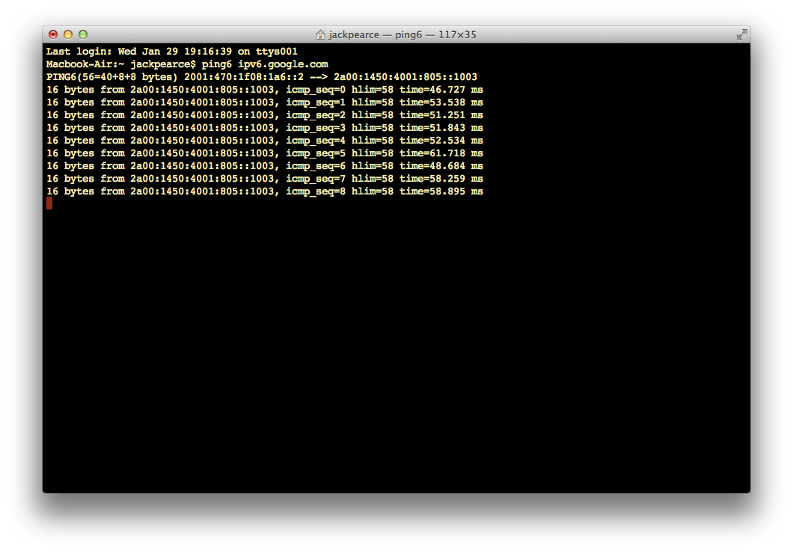

How To: IPv6 over IPv4 at home, today
In this article I explain how to enable IPv6 connectivity from any desktop in less than 5 minutes.
I was chatting with Dan Jenkins on Twitter. He asked when will Virgin Media roll out IPv6 support? I suggested an IPv6 over IPv4 tunnel but it may be tricky to setup. I did a quick Google but to my surprise didn’t find the slew of blog posts explaining how to set this up. I did however find Tunnel Broker.
Tunnel Broker
“Our free tunnel broker service enables you to reach the IPv6 Internet by tunneling over existing IPv4 connections from your IPv6 enabled host or router to one of our IPv6 routers. Try it now!”
Awesome.
- It’s free
- It’s from HE. (Hurricane Electric)
- Your own /48 prefix once your tunnel is up
- Ability to create your tunnel on geographically diverse tunnel-servers (Fremont, Ashburn, Chicago, Dallas, Denver, Kansas City, Los Angeles, Miami, New York, Seattle, Toronto, Amsterdam, Berlin, Frankfurt, London, Paris, Prague, Stockholm, Warsaw, Zurich, Hong Kong, Singapore, and Tokyo)
Step by step
First test to see if your ISP already supports IPv6. Nope? OK on to the next step.
- Register at Tunnel Broker
- Create Regular Tunnel
- Fill in your IPv4 Endpoint. It’s important to note that at this stage their system will attempt to ping the IP you supply. I enabled WAN ICMP response on my router until the form was submitted at which point I disabled it again.
- Choose a Tunnel Server that is geographically closest to you. After completing these steps HE will assign you a /64.
On your ‘Tunnel Details’ page you’ll want to select the ‘Example Configurations’ tab.
There will typically be three commands you’ll have to run. One to create the 6in4 tunnel. One to assign your IPv6 address to that tunnel and one to statically route all IPv6 traffic over that tunnel.
There are examples for many routers and operating systems including Cisco IOS, JunOS, OpenWRT, pfSense, FreeBSD, Debian/Ubuntu, Mac OS X, and Windows etc.
Well.. that was easy. 
Bear in mind
route -n add -inet6 default 2001:470:1f08:1a6::1
netsh interface ipv6 add route ::/0 IP6Tunnel 2001:470:1f08:1a6::1
ipv6 route ::/0 Tunnel0When running any of the above commands, these are just three examples, you’re telling your device to route all IPv6 traffic via HE. Afterall, this is a tunnel!
IPv6 is a scary thing and I’d love to be more confident on the subject. This is something I am most definitely going to study for and I reccommend anyone in the industry to do the same.